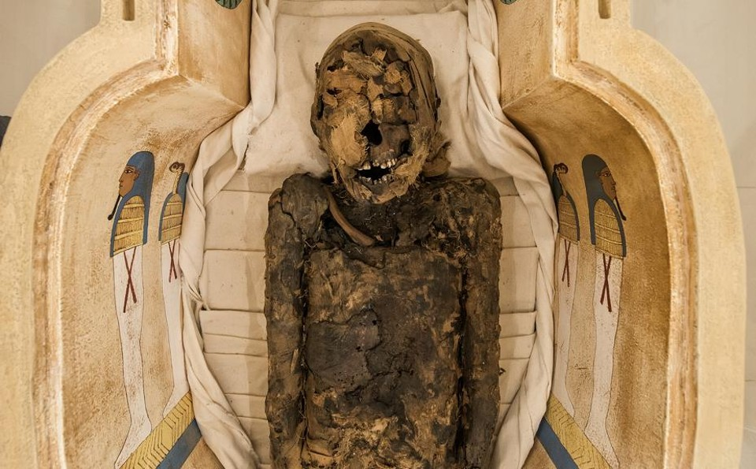
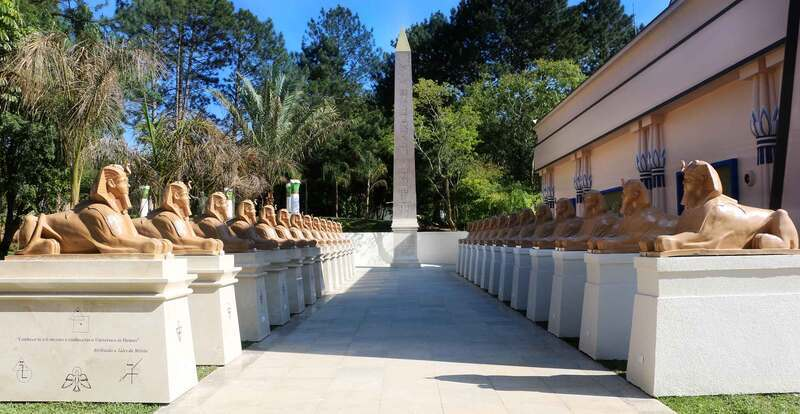
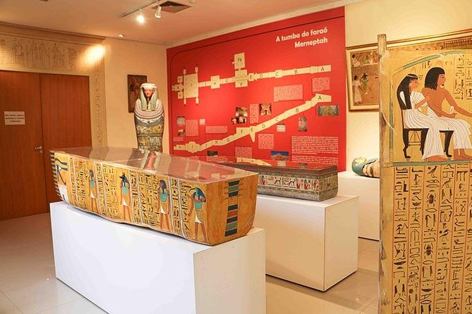
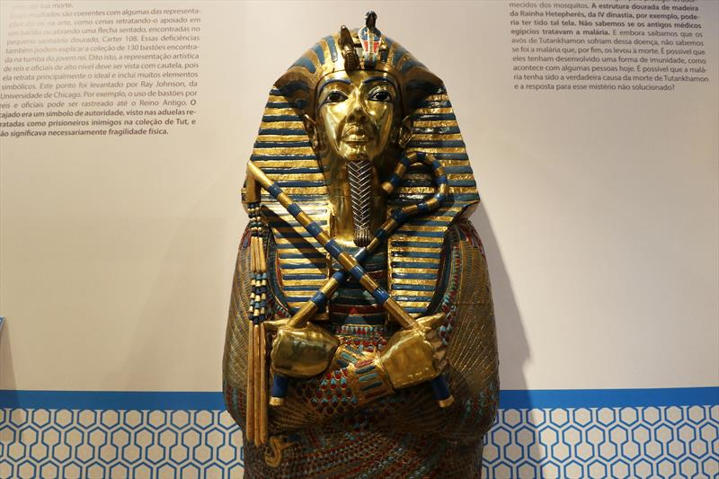

• O Museu Egípcio e Rosacruz , localizado em Curitiba, é uma das poucas instituições no Brasil dedicadas exclusivamente à cultura e civilização do Egito Antigo. Inaugurado em 1990 e mantido pela Ordem Rosacruz – AMORC, o museu apresenta um acervo impressionante que inclui réplicas de artefatos egípcios, múmias, esculturas, papiros e objetos usados em rituais religiosos e cotidianos. A arquitetura do museu, com influência das formas e símbolos egípcios, proporciona uma tradição completa no universo místico e histórico daquela civilização.
• A peça central do acervo é uma múmia egípcia autêntica de mais de 2.700 anos, envolta em mistérios e histórias fascinantes. Além disso, o museu oferece exposições temáticas e cursos voltados para filosofia, arte e espiritualidade do Antigo Egito. O Museu Egípcio e Rosacruz também promove uma série de palestras, workshops e visitas guiadas, proporcionando ao público uma experiência cultural rica e educativa. É um verdadeiro portal para o passado, onde os visitantes podem mergulhar nos mistérios e sabedoria de uma das civilizações mais influentes da história humana.
As Obras do Museu Egípcio e Rosacruz: Um Portal para o Egito Antigo
O Museu Egípcio e Rosacruz guarda um acervo fascinante que transporta os visitantes para o mundo misterioso e simbólico do Egito Antigo. Suas exposições apresentam réplicas de objetos religiosos, artistas funerários e esculturas, criando uma narrativa visual envolvente que revela a sabedoria e a espiritualidade de uma das civilizações mais antigas da história.
Entre as peças mais impressionantes, destaca-se a autêntica múmia egípcia, que, junto com sarcófagos e amuletos, oferece uma janela para os rituais e referências sobre a vida após a morte. O museu também exibe esculturas de deuses, modelos de templos e joias, cada uma contendo de simbolismo e detalhes impressionantes. As obras dialogam com o espaço místico do museu, oferecendo uma experiência sensorial que combina história, arte e espiritualidade.
O ambiente moderno e os núcleos que remetem ao Antigo Egito enriquecem a experiência visual, criando uma atmosfera de fascínio e mistério. Cada visita ao Museu Egípcio e Rosacruz é uma jornada ao passado, onde os visitantes podem explorar os enigmas de uma das culturas mais influentes da humanidade.